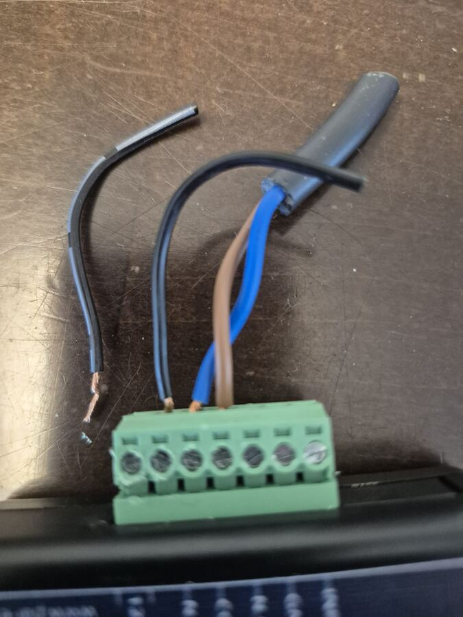

איך החלפתי את המנוי של פלגייט בממסר Zigbee ב-37 ₪
שער החניה שלי נפתח מהטלפון דרך PalGate Spider-50: קופסת 4G עם כרטיס SIM משלה, ומנוי של 300 ₪ בשנה. הוצאתי אותה, ובמקומה שמתי ממסר Zigbee שעלה 10 דולר (כ-37 ₪), פעם אחת. היום אני פותח את השער בלחיצה על אריח ב-ZigDash, בבית ומכל מקום.
300 ₪ כל שנה על המנוי, או כ-37 ₪ פעם אחת על הממסר. הממסר החזיר את עצמו בערך תוך שישה שבועות.
איך טלפון פותח שער
לבקר של השער יש כניסת פתיחה (START): שני מגעים שכשמחברים אותם זה לזה, השער נפתח, בדיוק כמו הכפתור בשלט. הספיידר הוא ממסר עם כרטיס SIM: כשאפליקציית פלגייט או שיחת טלפון מבקשות, הוא מחבר את שני המגעים לרגע.
ממסר Zigbee עושה בדיוק את אותה עבודה. ההבדל היחיד הוא מי אומר לו להיסגר: רכזת ה-Zigbee שלכם בבית, במקום שירות סלולרי שמשלמים עליו כל שנה.


מה צריך
- ממסר Zigbee עם מגע יבש. שלי הוא "1 Channel Zigbee/WiFi Tuya Smart Relay, Dry Contact NO/NC/COM" מ-AliExpress, בערך 10 דולר. הוא נמכר בגרסת WiFi ובגרסת Zigbee: בחרו Zigbee (על הכרטיס יש מודול ZT3L). הוא נמכר גם למתחי הזנה שונים; אני לקחתי את גרסת AC 85–250V.
- מגע יבש זה החלק החשוב. מגע יבש הוא מתג פשוט בלי מתח משלו: הוא רק מחבר את COM ל-NO, בדיוק כמו הכפתור בשלט. ממסר שמוציא מתח על המהדקים שלו (כמו אלה שמיועדים להדלקת מנורה) עלול להזיק לכניסה של הבקר. חפשו "dry contact" ומהדקים שמסומנים COM, NO ו-NC.
- רכזת Zigbee2MQTT בבית שמגיעה עד השער. לי כבר הייתה אחת (SMLIGHT SMHUB) לשאר הבית. אם אין לכם, ראו רכזות.
- ZigDash בטלפון (Google Play). פתיחת השער בבית בחינם. פתיחה מכל מקום משתמשת בשליטה מרחוק של ZigDash Pro: רכישה חד-פעמית, בלי מנוי.

1. צימוד הממסר ב-ZigDash
קודם מצמדים אותו בבית, על השולחן, לפני שהוא נכנס לקופסת השער.
- חברו את הממסר לחשמל.
- ב-ZigDash, פתחו את מכשירים והקישו על התחלת שיוך.
- לחצו לחיצה ארוכה על הכפתור של הממסר עד שהנורית מהבהבת. כך הוא נכנס למצב צימוד.
- ZigDash מציגה מוכן עם המכשיר החדש. שנו את השם שלו לשער.
הדליקו וכבו אותו כמה פעמים ותקשיבו לנקישה של הממסר.
2. הוצאת הספיידר
- מצאו את שני החוטים שיוצאים מיציאת הממסר של הספיידר (COM1 ו-N.O.1) אל כניסת הפתיחה של הבקר. סמנו אותם.
- שחררו את פס המהדקים של הספיידר, ונתקו את ההזנה שלו.

3. חיווט הממסר
- יציאה: שני החוטים של כניסת הפתיחה נכנסים ל-COM ול-NO של הממסר. את NC משאירים ריק. במגע יבש הסדר לא משנה.
- הזנה: גרסת AC 85–250V מתחברת ישר לחשמל, כמו מטען של טלפון: שני חוטים, פאזה ואפס, מאספקת ה-230V של השער.
- סגרו את הקופסה של הממסר, שימו אותו במקום יבש, והחזירו את החשמל בלוח.
4. אריח "שער" ב-ZigDash
- בלוח הבקרה, הקישו על הוספה מהתקן ובחרו שער.
- הקישו על האריח: הממסר נסגר והשער מתחיל לזוז, כמו עם השלט.
- כניסת הפתיחה של השער מצפה ללחיצה על כפתור, ולכן מגע שנשאר סגור עלול להיחשב כלחיצה ארוכה. בדקו איך השער שלכם מגיב, וכבו את האריח שוב אם צריך.
- מכל מקום: עם ZigDash Pro, הפעילו שליטה מרחוק, ואותו אריח עובד גם מחוץ לבית, בלי לפתוח פורט בנתב ובלי תשלום חודשי. זה עובד עם עד חמישה טלפונים; שיתוף עם טלפון נוסף מוסיף את הטלפונים של המשפחה בקוד QR אחד.
על מה מוותרים
כדי להיות הוגן כלפי הספיידר, הוא עושה דברים שממסר Zigbee לא עושה:
| PalGate Spider | ממסר Zigbee + ZigDash | |
|---|---|---|
| עלות | 300 ₪ בשנה (המסלול שלי) | כ-37 ₪ פעם אחת; שליטה מרחוק היא רכישה חד-פעמית של ZigDash Pro |
| חיבור | כרטיס SIM של 4G משלו: עובד גם כשאין אינטרנט בבית | רכזת ה-Zigbee שלכם בבית; מחוץ לבית צריך את האינטרנט של הבית |
| מי יכול לפתוח | משתמשים ואורחים שמנוהלים באפליקציית פלגייט, ופתיחה בשיחת טלפון | הטלפונים שאיתם שיתפתם את הבית (עד חמישה מרחוק) |
| ענן | השירות של פלגייט | אין בבית; מרחוק עובר דרך הממסר של ZigDash, בהצפנה מקצה לקצה |
לבית פרטי שבו המשפחה פותחת שער אחד, הממסר עושה כל מה שהייתי צריך. לבניין עם הרבה דיירים ואורחים, שירות מנוהל כמו פלגייט עדיין הגיוני.